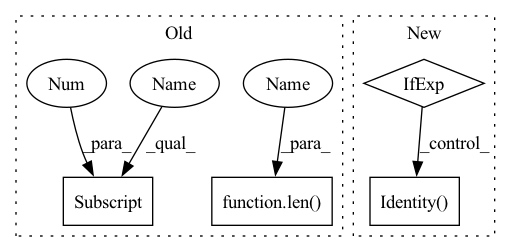

Pattern ID :34274

Before Change
def SNN(in_channels, out_channels, hidden_channels=[256, 256, 256, 256]):
return nn.Sequential(
nn.BatchNorm1d(in_channels),
init_selu(nn.Linear(in_channels, hidden_channels[0])),
nn.Sequential(
*[
Residual(
nn.Sequential(
init_selu(
nn.Linear(hidden_channels[idx - 1], hidden_channels[idx])
),
nn.SELU(),
)
)
for idx in range(1, len(hidden_channels))
]
),
init_linear(nn.Linear(hidden_channels[-1], out_channels)),
After Change
):
Self-normalizing Neural Network (SNN)
return nn.Sequential(
nn.BatchNorm1d(in_channels, affine=False, momentum=None)
if normalize_input
else nn.Identity(),
init_selu(nn.Linear(in_channels, hidden_channels)),
nn.SELU(),
Residual(
In pattern: SUPERPATTERN
Frequency: 4
Non-data size: 4
Instances
Fragment ID: 98261880
Project Name: jgraving/selfsne
Commit Name: c1cd9eabaa6362e1988fd7af9b466a4c2b07e02d
Time: 2021-11-23
Author: jgraving@gmail.com
File Name: cne/nn.py
M Class Name: AnonimousClass
N Class Name: AnonimousClass
M Method Name: SNN(5)
N Method Name: SNN(3)
M Parent Class:
N Parent Class:
M File Name: cne/nn.py
N File Name: cne/nn.py
M Start Line: 47
M End Line: 64
N Start Line: 240
N End Line: 262
'>
Before Change
def SNN(in_channels, out_channels, hidden_channels=[256, 256, 256, 256]):
return nn.Sequential(
nn.BatchNorm1d(in_channels),
init_selu(nn.Linear(in_channels, hidden_channels[0])),
nn.Sequential(
*[
Residual(
nn.Sequential(
init_selu(
nn.Linear(hidden_channels[idx - 1], hidden_channels[idx])
),
nn.SELU(),
)
)
for idx in range(1, len(hidden_channels))
]
),
init_linear(nn.Linear(hidden_channels[-1], out_channels)),
After Change
):
Self-normalizing Neural Network (SNN)
return nn.Sequential(
nn.BatchNorm1d(in_channels, affine=False, momentum=None)
if normalize_input
else nn.Identity(),
init_selu(nn.Linear(in_channels, hidden_channels)),
nn.SELU(),
Residual(
'>
Fragment ID: 98261875
Project Name: jgraving/cne
Commit Name: c1cd9eabaa6362e1988fd7af9b466a4c2b07e02d
Time: 2021-11-23
Author: jgraving@gmail.com
File Name: cne/nn.py
M Class Name: AnonimousClass
N Class Name: AnonimousClass
M Method Name: SNN(5)
N Method Name: SNN(3)
M Parent Class:
N Parent Class:
M File Name: cne/nn.py
N File Name: cne/nn.py
M Start Line: 47
M End Line: 64
N Start Line: 240
N End Line: 262
'>
Before Change
super(CNNUnpairedLayer, self).__init__()
self.context = context
self.mix_base = mix_base
if len(layers)>0 and layers[0]==0:
layers = ()
n = n_in
After Change
nn.Dropout(p=dropout_rate)
]
n_in = n_out
self.conv = nn.Sequential(*conv) if len(conv) > 0 else nn.Identity()
def forward(self, x): // (B, N, n_in)
B, N, _ = x.shape
'>
Fragment ID: 98261877
Project Name: mxfold/mxfold2
Commit Name: 97079ed64ffd5374169c120e85cd38ec4ed21553
Time: 2019-11-30
Author: satoken@bio.keio.ac.jp
File Name: dnnfold/fold/layers.py
M Class Name: CNNUnpairedLayer
N Class Name: CNNUnpairedLayer
M Method Name: __init__(5)
N Method Name: __init__(8)
M Parent Class: nn.Module
N Parent Class: nn.Module
M File Name: dnnfold/fold/layers.py
N File Name: dnnfold/fold/layers.py
M Start Line: 349
M End Line: 368
N Start Line: 123
N End Line: 132